Misión
Texto oficial de misión pendiente de confirmación institucional.
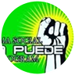
FundaciónBatey Cacata · La Romana · República Dominicana
Creemos en el potencial de cada persona. Trabajamos para crear oportunidades educativas y sociales que permitan construir un futuro mejor para nuestra comunidad.
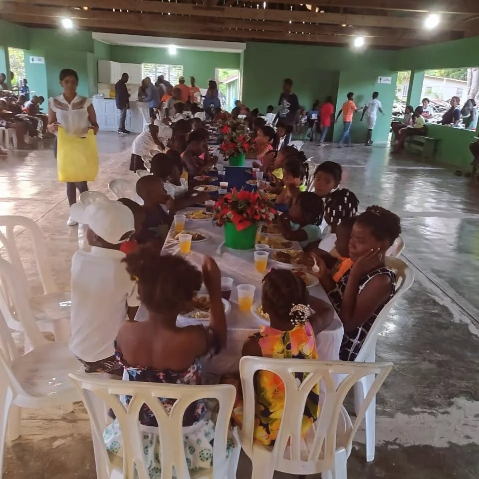
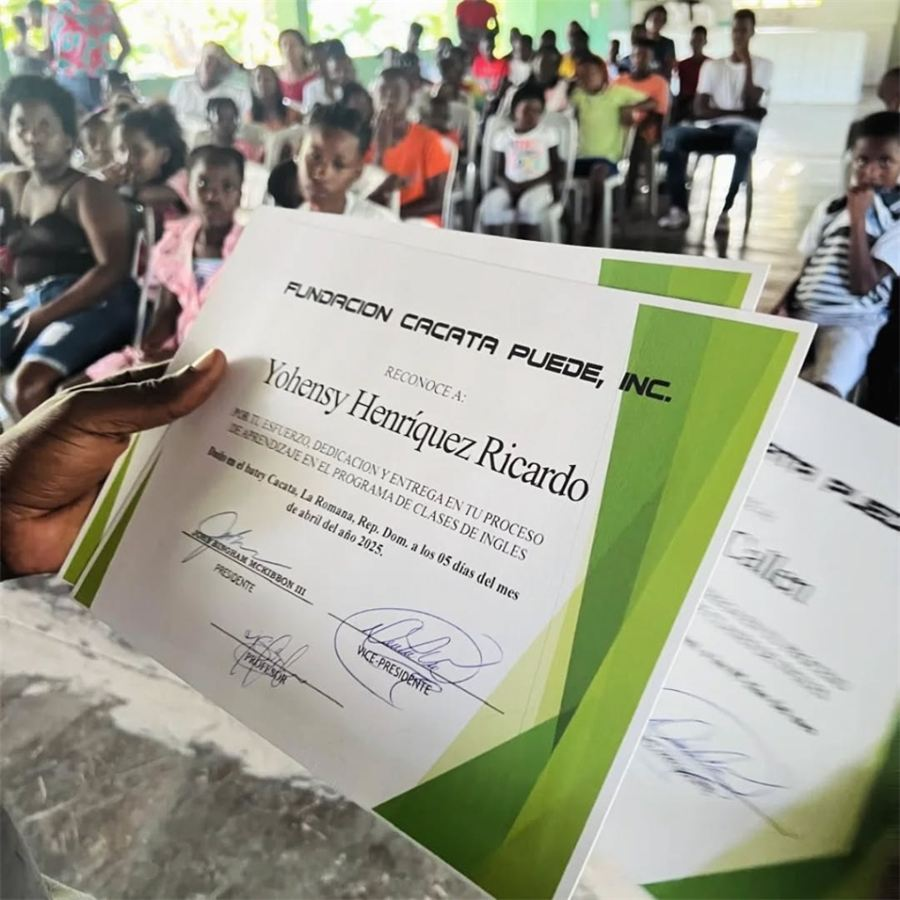
Quiénes somos
Fundación Cacata Puede es una organización comprometida con el acceso a la educación, el acompañamiento social y el crecimiento de jóvenes y familias de nuestra comunidad.
Esta plataforma reunirá nuestras actividades, historias de impacto y oportunidades. La historia institucional, misión, visión y datos de contacto serán publicados al ser validados por la fundación.
Conoce cómo contactarnos →Información institucional
Fundación Cacata Puede trabaja para ampliar oportunidades educativas y sociales. La reseña histórica oficial será incorporada aquí tras la validación de la directiva.
Texto oficial de misión pendiente de confirmación institucional.
Texto oficial de visión pendiente de confirmación institucional.
Compromiso, educación, solidaridad y desarrollo comunitario. La declaración oficial se actualizará al ser aprobada.
Canales institucionales
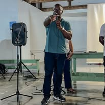
Liderazgo y presencia comunitaria
Director de la fundación
Dirige el trabajo de Fundación Cacata Puede con presencia activa en el terreno, impartiendo charlas de motivación y liderando iniciativas de educación, deporte y desarrollo que inspiran a nuestra juventud a creer en su potencial.
Nuestros programas
Espacio para reconocer el esfuerzo de estudiantes que completan sus programas de inglés.
Ver graduados →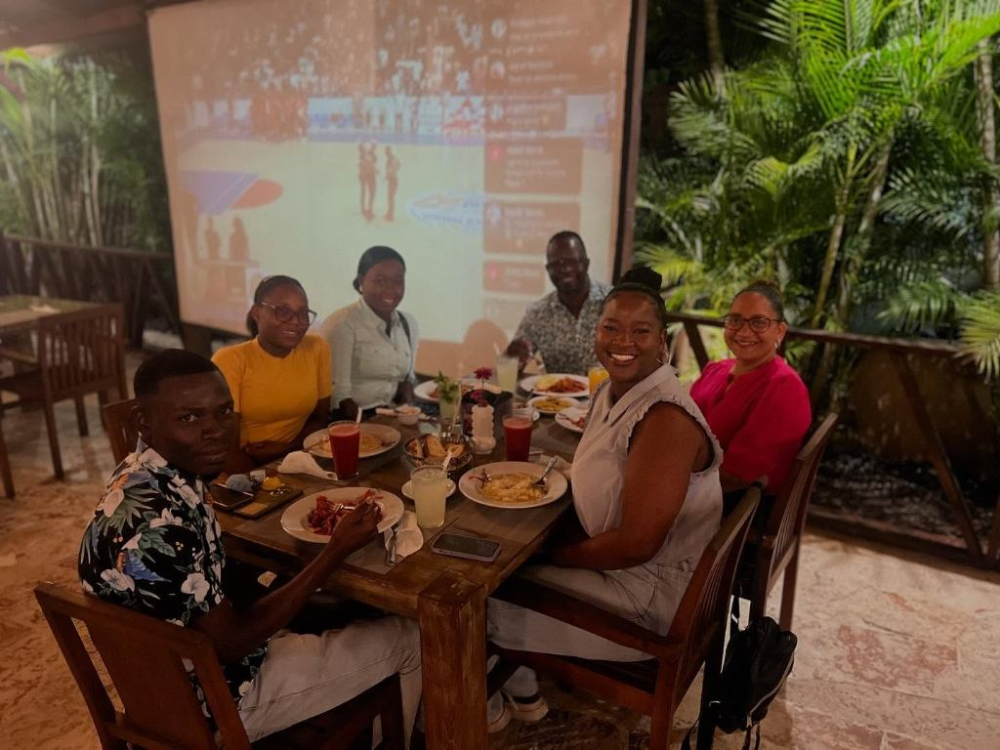
Orientación y apoyo a jóvenes que desean continuar sus estudios superiores.
Conocer convocatorias →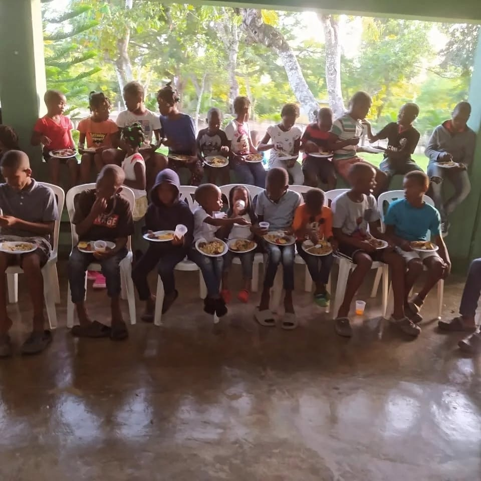
Iniciativas para acompañar a las familias y fortalecer nuestra comunidad.
Explorar iniciativas →Impacto que compartimos
“La educación es una herramienta para imaginar nuevas posibilidades.”
Fundación Cacata Puede
Reconocimiento al esfuerzo, dedicación y entrega de los estudiantes que completaron exitosamente su proceso de formación en las clases de inglés, abriendo nuevas oportunidades para su desarrollo personal y profesional.
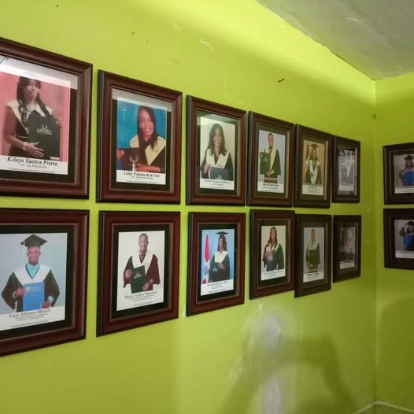
Cada cuadro en nuestro muro de honor representa una historia real de disciplina y superación. Decenas de jóvenes de Batey Cacata han alcanzado su título universitario en carreras como Contabilidad, Educación, Psicología, Administración e Ingenierías en prestigiosas universidades del país (UFHEC, O&M y más), demostrando que la educación abre caminos reales de transformación.
Algunos de los jóvenes de Batey Cacata que culminaron su carrera con el respaldo de la fundación.
Psicología
Universidad Dominicana O&MPsicología
Universidad Dominicana O&M“Un testimonio vivo de esfuerzo, perseverancia y superación para toda nuestra comunidad.”
Un testimonio vivo de esfuerzo, perseverancia y superación para toda nuestra comunidad. A través del programa de becas universitarias de la Fundación Cacata Puede, Yohanny culminó con orgullo su formación superior, demostrando que con apoyo y dedicación no hay meta inalcanzable.
Ingeniería Industrial
Universidad UFHECIngeniería Industrial
Universidad UFHEC“Ejemplo de constancia, talento y superación.”
Ejemplo de constancia, talento y superación. Con el respaldo del programa de becas universitarias de la Fundación Cacata Puede, Diógenes completó con éxito su carrera en Ingeniería Industrial en la Universidad Federico Henríquez y Carvajal (UFHEC), abriendo puertas como profesional técnico y orgullo para toda nuestra comunidad.
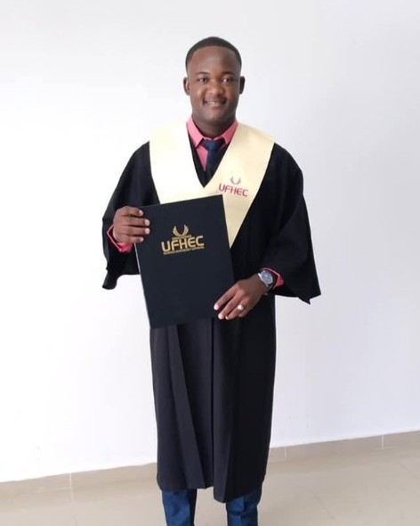
Administración de Empresas
Universidad UFHECAdministración de Empresas
Universidad UFHEC“Dedicación, liderazgo y visión de futuro.”
Dedicación, liderazgo y visión de futuro. Gracias al respaldo de la Fundación Cacata Puede, Mario obtuvo su título profesional en Administración de Empresas en la Universidad Federico Henríquez y Carvajal (UFHEC), consolidándose como un referente de superación y gestión para el desarrollo de nuestra comunidad.
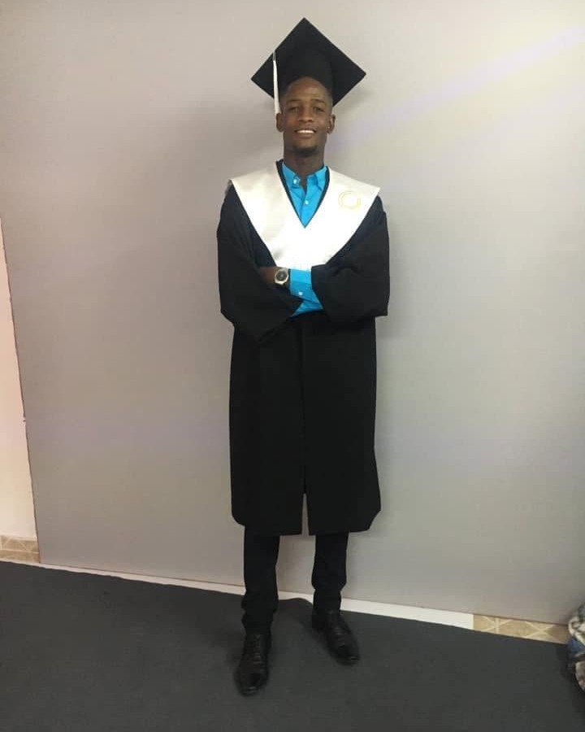
Ingeniería de Sistemas y Computación
Universidad Dominicana O&MIngeniería de Sistemas y Computación
Universidad Dominicana O&M“Pasión por la tecnología, disciplina y superación constante.”
Pasión por la tecnología, disciplina y superación constante. A través del programa de becas universitarias de la Fundación Cacata Puede, Luis Alberto completó con éxito su carrera en Ingeniería de Sistemas y Computación en la Universidad Dominicana O&M, convirtiéndose en un profesional tecnológico de referencia y demostrando el inmenso talento de la juventud de Batey Cacata.
Educación
Universidad Dominicana O&MEducación
Universidad Dominicana O&M“Vocación pedagógica, compromiso formativo y superación.”
Vocación pedagógica, compromiso formativo y superación. Con el respaldo del programa de becas de la Fundación Cacata Puede, Cris Santos culminó exitosamente su formación profesional en Educación en la Universidad Dominicana O&M, aportando sus conocimientos y pasión por la enseñanza al porvenir de las nuevas generaciones.
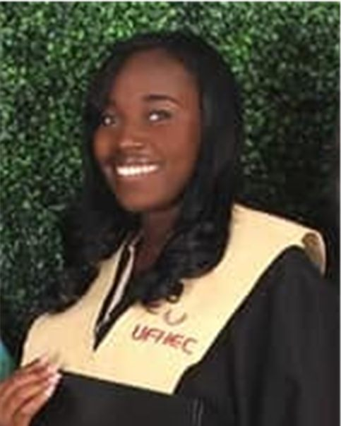
Contabilidad
Universidad UFHECContabilidad
Universidad UFHEC“Rigor profesional, visión financiera y ejemplo de constancia.”
Rigor profesional, visión financiera y ejemplo de constancia. Con el acompañamiento de la Fundación Cacata Puede, Margarita alcanzó su titulación superior en Contabilidad en la Universidad Federico Henríquez y Carvajal (UFHEC), consolidándose como una profesional clave para el progreso económico y social de nuestra comunidad.
Creemos en el respaldo integral. Además de la cobertura académica, la directiva de la Fundación Cacata Puede mantiene un acompañamiento cercano y constante con los estudiantes universitarios, orientándolos en sus metas, celebrando sus logros y fortaleciendo su vocación profesional.
Becas universitarias
Las convocatorias se publicarán aquí con sus requisitos, fechas y documentación necesaria. Decenas de jóvenes de nuestra comunidad ya han alcanzado su meta profesional con el respaldo de la fundación.
Conoce a nuestros becarios graduados →
Galería
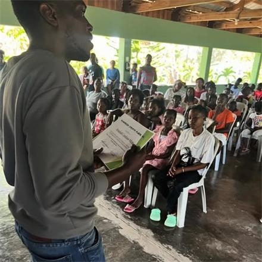
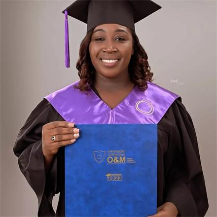
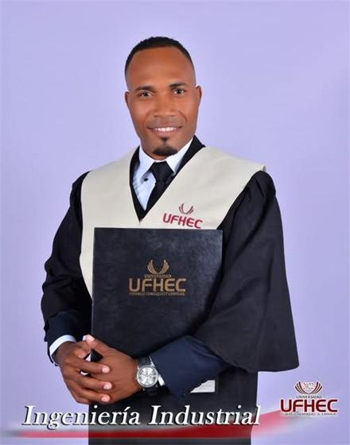
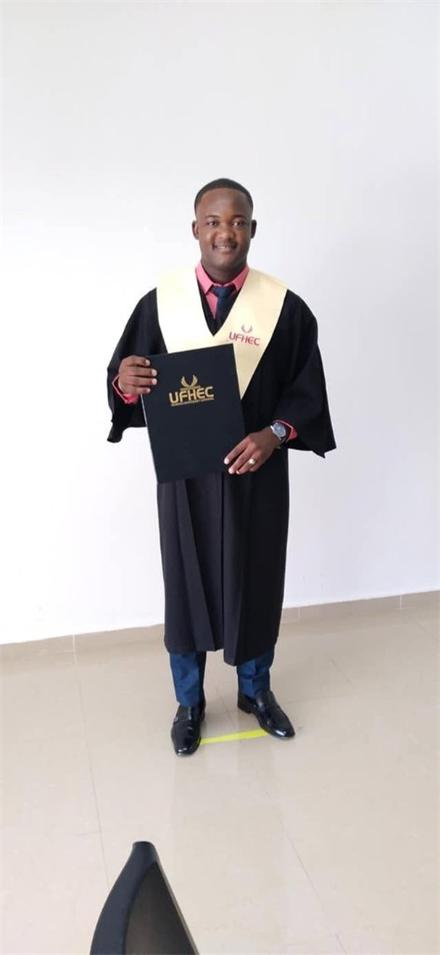
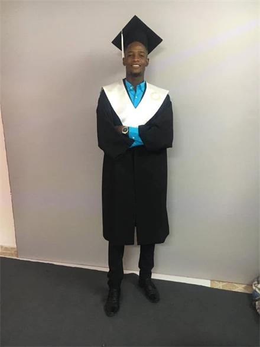
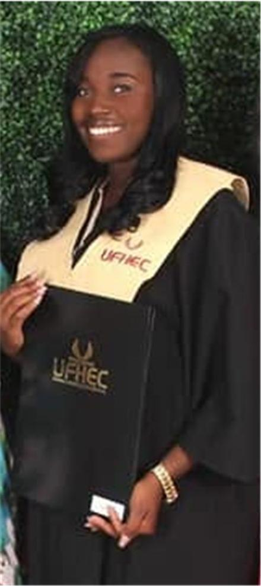
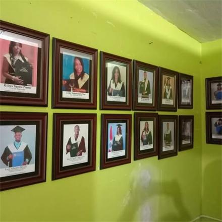
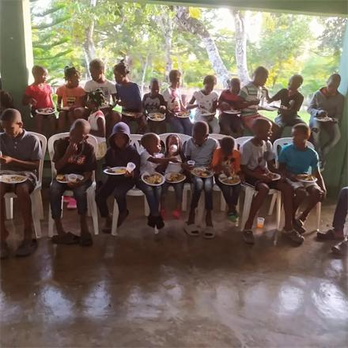
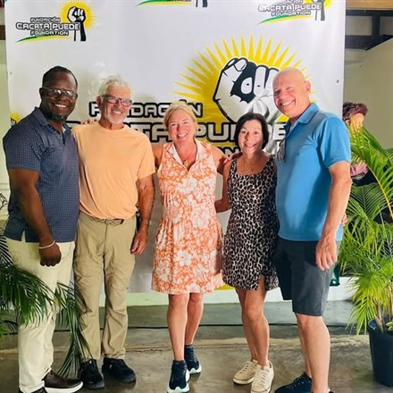
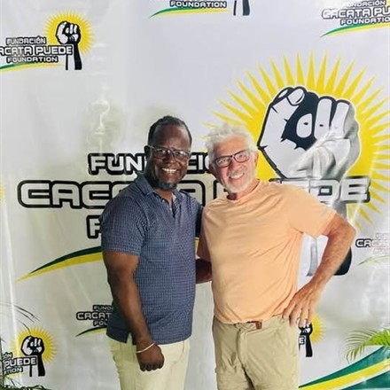
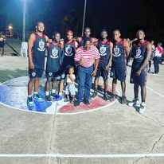
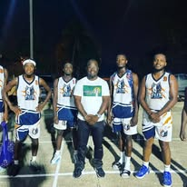
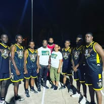
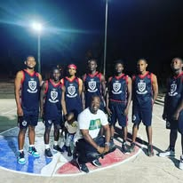
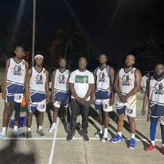
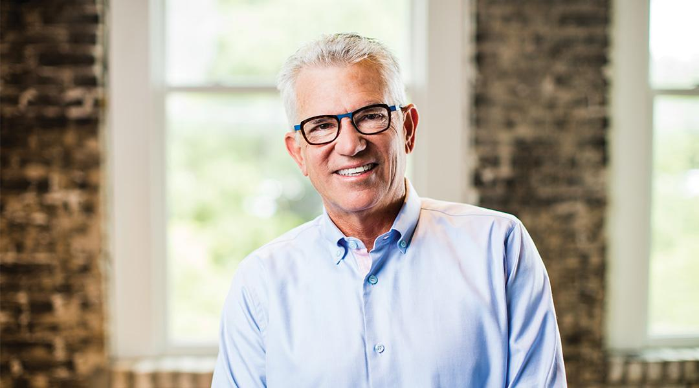
Patrocinadores y aliados
Reconocemos y agradecemos el apoyo de nuestros patrocinadores y aliados estratégicos, cuyo compromiso contribuye a impulsar oportunidades educativas y sociales.
Visitar sitio oficial ↗Contacto
Para información institucional, oportunidades de colaboración o consultas generales, escríbenos.
Los canales oficiales de contacto se añadirán tras su validación.